|
 |
教你炒股票34：宁当面首，莫成怨男
（2007-03-07 15:09:54) 面首，一种职业；怨男，一种自虐。面首常有，怨男更常有。怨男，无分贵贱，无关学问。李后主（李煜），一国之君，人生长恨水长东地成就一代怨词，也算怨得有点声色；以后主为隔代知己的王某(王国维），一头扑入不能长东只能长恨的死水里，比起清华园后来那些因阴阳失调而成就的千万怨男，也算怨得有点动静。清华男的脑子多不好使，在逻辑与数据的迷宫中迷失自我，是否与此阴阳失调相关且不论，但北大男如面首，清华男如怨男，却是不争的事实。宁要面首，莫要怨男，这也是北大比清华出色的地方。站在消费者的角度，面首总比怨男可爱得多。最不可爱的，当然就是怨男里的面首或面首中的怨男。那一片记录着中国人耻辱的残园附近的两种男人，就如同股市中的失败男人一样。股市中的失败男人，只有两种，面首与怨男，当然也就包括其中最不可爱的两者交集。
面首，被股票所消费者，被股票所玩弄者，被股票忽悠着从阳亢到阳痿间不断晃悠者。非怨男的面首有一好处，就算不太精液了也还很敬业，到处想方设法也要找点这鞭那鞭嚼嚼又可以继续傻忽忽、乐呵呵地敬业了。怨男，有两种，一种是当面首时被用废的，能用的只剩下嘴了，或者去当当股评卖卖假阳具去骗骗人，或者每天对着股市这镜子顾影自怜，或者就编编故事对着往昔的梦境再梦里阳亢一把；另一种是拍AV的、说评书的、当狗崽的、玩裸聊的，总之，都不是能玩真的，都是些企图用口眼就能制造快感的发育不良者。要快感就玩真的，真刀真枪来，总是当医疗器械的免费宣传者那算什么事？
无论面首或怨男，最大的共同点就是喜欢被玩，当一种面首或怨男的密码被输入后，这面首或怨男的程序就自动运行。其人，不过是傀儡而已，但竟然也乐在其中，也算天下之奇事。不摆脱这各种情绪操控的傀儡命运，就无人可言，但更可怕的的是，很多人却深陷其中而不能自拔，甚至不能自知。很多人，从一开始就自闭其路，一开始就是死路一条。例如，自以为高明地把股市当赌场(吴敬琏），这样，一双赌眼看股市，怎么闹都是一条赌命，其命运就由其最开始的所谓高明所决定了。“闻见学行”，有如此闻，而有如此见，复有如此学，终有如此行，如此股市就以各人自渎的想象成为众多股市参与者的坟墓。
正闻、正见、正学、正行，无此四正，要在股市里终有成就，无有是处。正，不是正确的意思，所谓正确，不过是名言之争辩。正，是正是，是当下，只有当下，才是正是，才是这个。要当下闻、当下见、当下学、当下行，才是正闻、正见、正学、正行。而对于股市来说，只有走势是当下的，离开走势，一切都与当下无关。一切“闻见学行”，只能依走势而“闻见学行”，离开此，都是瞎闹。不符合当下走势的，上帝说正确也白搭。由此，入股市者，首先就要把所有面首、怨男的情绪、基因抛掉，化掉，如何能办到？也离不开当下，离不开在当下的走势中磨练。当下的走势就是一切，一切股市的秘密就在其中。这秘密，是大道，没有任何的遮掩，对任何人都一视同仁、明明白白地彰显，你还向外求什么？而无数的人，还是要争着玩骑驴找驴的游戏。
在股市中，钱的大小根本不重要，亏损是按百分比的，所有的钱，无论你是从哪里涨起来的，在任何一个位置，变成0的几率是一样的。这个几率是当下存在的，任何人、任何时候都不可能摆脱，这是“不患”的。当下的走势，就如同一把飞速滚动的屠刀，任何与之相反的，都在屠杀之列，而与之顺着的，那被屠的血就成了最好的盛宴。也就是说，一旦你的操作，陷入一种与当下走势相反的状态，任何该种状态的延续就意味着死亡，一旦进入这种状态，唯一正确的选择就是离开。当然，走势是千变万化而有级别性的，任何的当下，并不就意味着1秒种的变化，而是根据你的资金以及承受所可能的操作级别来决定的。一直所说的操作级别，就是针对此而说。例如，你根据资金等情况，决定自己的操作级别是30分钟的，那30分钟所有可能发生的走势都在你的计算之中，一旦你已有的操作出现与30分钟实际当下走势相反的情况，那么就意味着你将进入了一个30分钟级别的屠杀机器里。这种情况下，只有一种选择，就是用最快的时间退出。
注意，这不是止蚀，而是一种野兽般的反应。走势如同森林，野兽在其中有着天生般的对危险的直觉，这种危险的直觉总是在危险没发生之前，而野兽更伟大的本事在于，一旦危险过去，新的觅食又将开始，原来的危险过去就过去了，不会有任何心理的阴影，只是让对危险的知觉更加强大。没有任何走势是值得恐惧的，如果你还对任何走势有所恐惧、有所惊喜，那么，你还是面首、怨男级别的，那就继续在当下的走势中磨练，让这一切恐惧、惊喜灰飞湮灭。这里，只需要正闻、正见、正学、正行，而不要面首与怨男，即使面首比怨男要可爱一丁点。
每日解盘(2007-03-07 15:12:14 )缠中说禅： 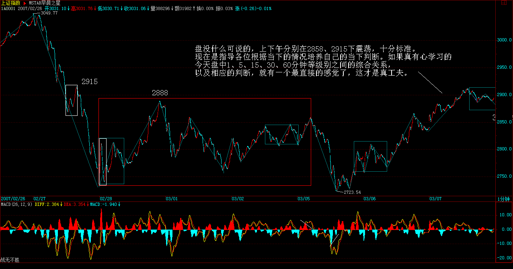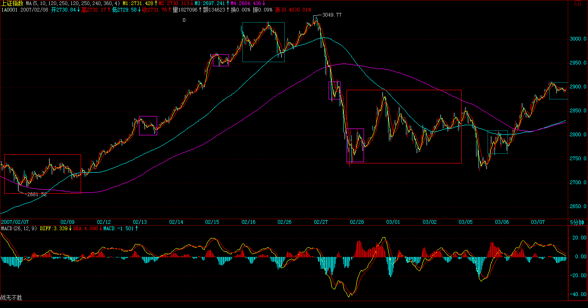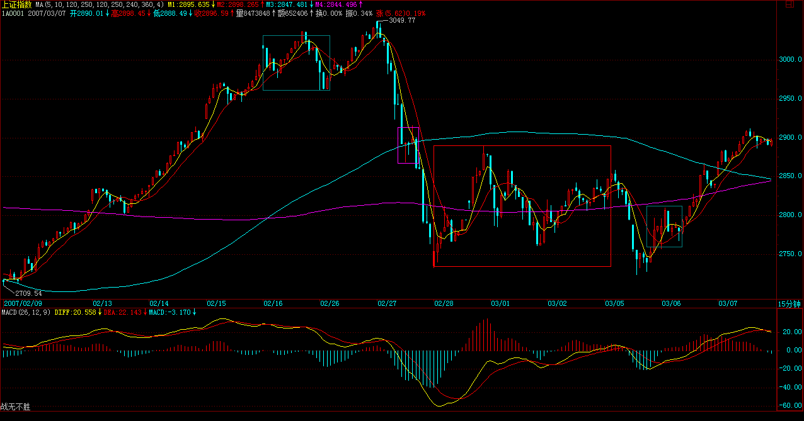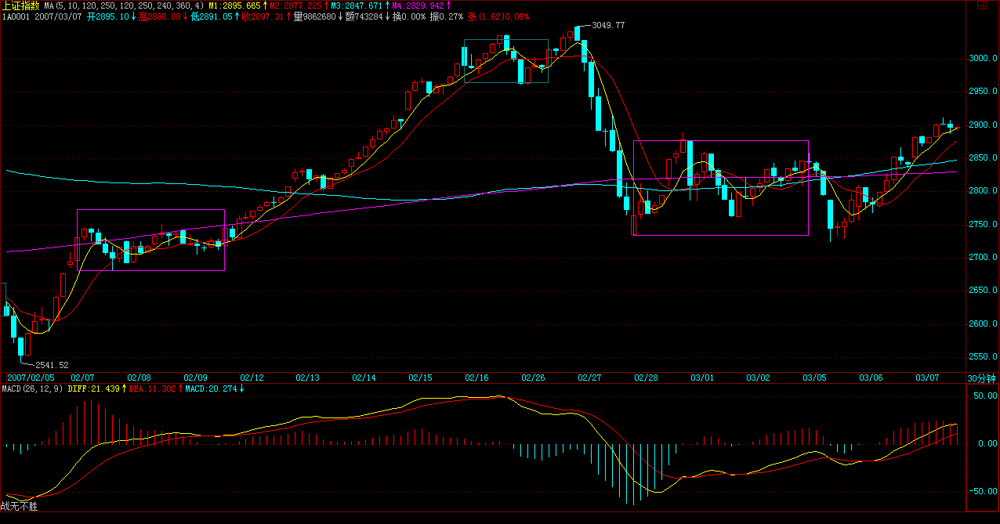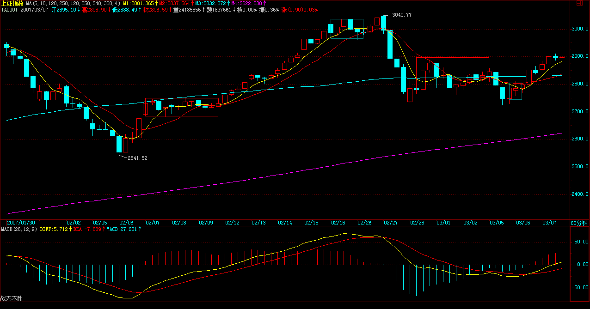大盘只要不有效站稳2915，最终形成第三类买点，则下面这中枢依然不能摆脱。说得简单点，现在大盘无非两种盘整方式，一种就在2915附近重新回跌，甚至继续破底形成之字型，一种就是先上3000，然后再回拉形成平台型，这些都不用考虑，当下就知道了。
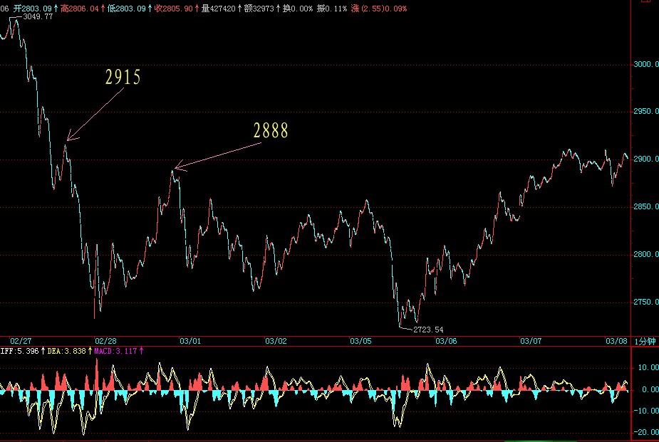每日解盘(2007-03-08 15:30:24)
缠中说禅：
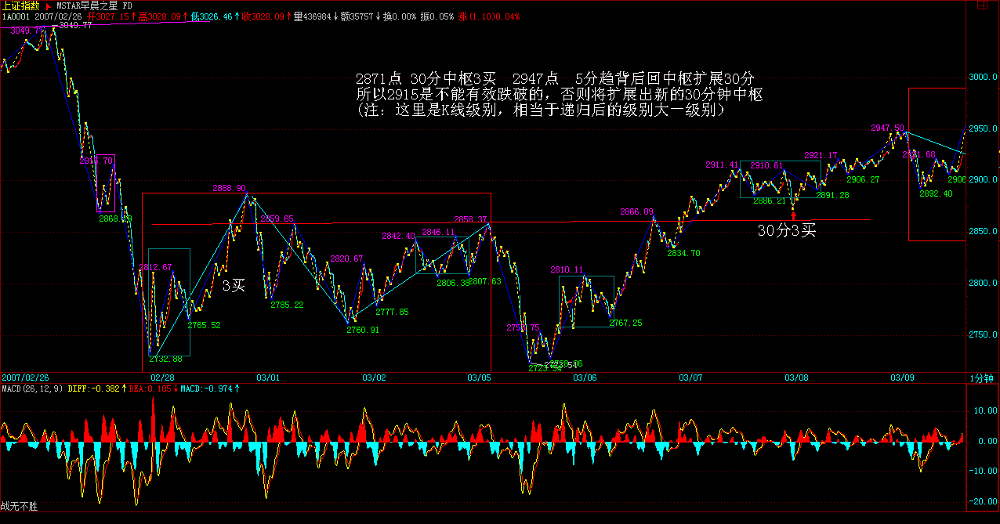 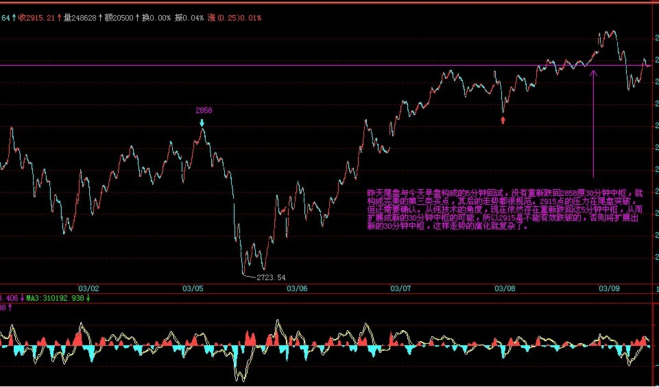 各股没什么可说的，还是板块轮动，每个板块的时间都不长，所以千万不能追高，一定要在买点买。对于散户来说，没必要参与板块的调整。不过，也不能太短，要把握其度，例如5分钟上还是主升，见一个1分钟以下的背驰就跑，这样大的利润可能都吃不到了，所以必须综合地判断，这是一个艰苦的磨练过程，必须不断交易而达到技术的完美
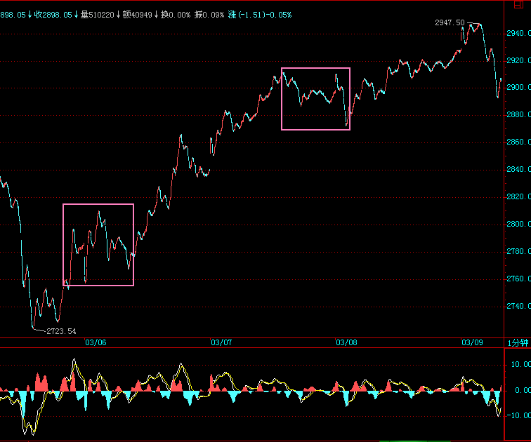 最近现实中，正构建一个传媒平台，和汉奸打仗，必须对舆论有所引导，这些事情是必须干的。
缠中说禅： 2007-03-07 15:12:14
大盘没什么可说的，上下午分别在2888、2915下震荡，十分标准。注意，来这里别把本ID当股评，现在是指导各位根据当下的情况培养自己的当下判断。如果真有心学习的，今天盘中1、5、15、30、60分钟等级别之间的综合关系，以及相应的判断，就有一个最直接的感觉了，这才是真工夫。 ==
缠中说禅2007-03-06 16:39:55 [举报] [匿名] 惊鸿一慕 缠中说禅： 2007-03-07 15:16:36
[匿名] 悠悠悠哉
缠中说禅： 2007-03-08 15:45:09
[匿名] 草草
缠中说禅： 2007-03-08 15:49:21
[匿名] 满目山河
缠中说禅： 2007-03-08 15:51:33
缠中说禅
缠中说禅： 2007-03-08 15:57:40
[匿名] 三藏
缠中说禅： 2007-03-08 15:59:11
[匿名] 后知后觉
缠中说禅： 2007-03-08 16:00:46
[匿名] 三九 缠中说禅： 2007-03-08 16:10:43
[匿名] 盼解惑！谢谢 从a+B+b的角度，是算柱子的面积而不是长度的最长处，看5分钟图就更明显了。从纯中枢的角度，5分钟中枢，昨天尾盘就形成，后面的拉以及今早的跳都是围绕的震荡。 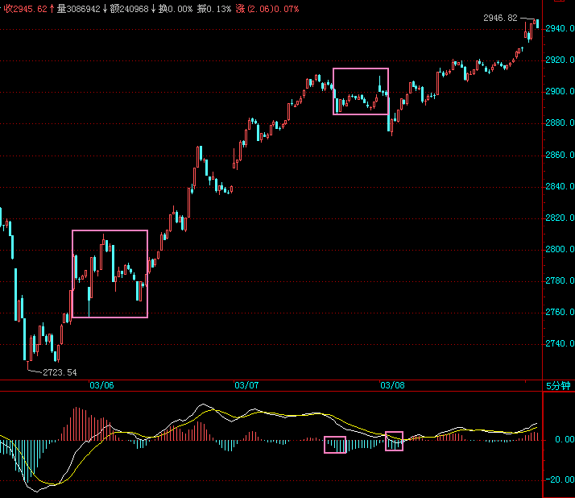
缠中说禅： 2007-03-08 16:13:13
[匿名] CCTV
缠中说禅： 2007-03-08 16:21:11
[匿名] L8453
缠中说禅： 2007-03-08 16:23:09
缠中说禅： 2007-03-08 16:26:49
[匿名] 乱麻 ==
缠中说禅： 2007-03-08 16:38:56
[匿名] 缠文观止
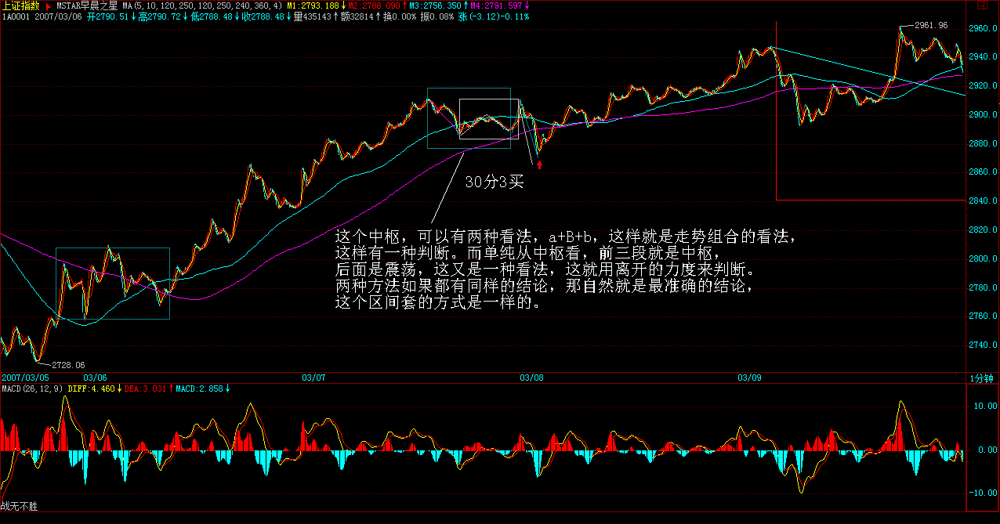 ＝＝＝＝＝＝＝＝＝＝
CCTV： 2007-03-08 17:13:18 |
|
|
|